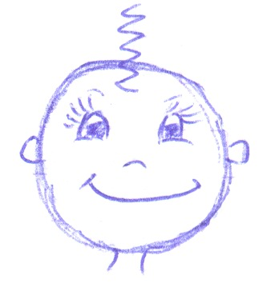

Кондратенко Татьяна Александровна.
Дата рождения:
18 сентября 1981 г.
Дата смерти, диагноз/причина:
Планирую покинуть сей бренный мир, когда выполню описанное в пункте "планы". Смерть будет сладкой - в прямом смысле; у меня сильная аллергия на подсолнечную халву, вот я и съем несколько килограмм (сбудется мечта идиота…)
Откуда родом / где пенаты:
Родные края - в Киргизии, в потрясающе красивом месте - рядом озеро Иссык-Куль и Тянь-Шанские горы.
Адреса для связи (mail, адрес родителей и прочие контактные адреса и телефоны):
Связываться со мной лучше через моих друзей: Люба - 37-26-86, Рита - 8-902-961-77-86.
Любимый кусочек любимой песни. А так же любимый и не любимый цвета:
Любимая песня - "Чистые пруды" Игоря Талькова (любимый - припев); любимый цвет - ярко-зелёный, не люблю коричневый и грязно-жёлтый.
Научный интерес / тема диплома, ФИО научного руководителя:
Нау. рук. - Г. К. Садретдинов, диплом: "Английская абсолютная монархия 16 века". Нормальным людям это ничего не говорит.
Понимание смысла жизни (зачем топчет эту землю):
Долго думала в чём смысл жизни и в итоге решила, что в поисках смысла. Как только его найдёшь, жить становится неинтересно.
Отношение к аборту, смертной казни и эвтаназии:
Считаю, что аборт - это убийство, но никогда не осуждаю людей, которые их делают (девушек имею в виду). Иногда он не неизбежен и необходим. К эвтаназии отношусь положительно (особенно, если человек сам её хочет), иногда она гораздо более гуманна, чем поддержание жизни.
Смертная казнь - самый сложный вопрос. Много думала, разбирала его со всех точек зрения и в итоге поняла: не знаю. Думаю, иногда некоторые люди её заслуживают, но как с ними поступать - не знаю.
Понимание большой и чистой любви (совокупляющуюся пару мытых слонов не предлагать):
Большая и чистая любовь… (кстати, вариант со слонами был очень даже ничего). Думаю, это то, ради чего стоит жить - найти того, с кем чувствуешь себя счастливой.
Брак - это продолжение любви или насилие над ней?
Хорошее дело, как известно, "браком" не обзывают. Но не знаю пока, как ответить на этот вопрос; лет через 10 скажу точно. Но, думаю, насилие над любовью - это бытовуха; романтика должна сохраняться всегда - и до брака, и во время.
Как относится к сексу до брака:
Очень положительно; на мой взгляд, это необходимо (в разумном количестве).
Как относится к оральному сексу до брака:
Нормально; а почему именно "до брака"?
Как относится к анальному сексу до брака:
Никак.
Как относится к виртуальному сексу после брака:
Если нравиться - почему бы и нет.
Сколько хочет детей (лично проверю выполнение этого желания :)
Оптимальное количество ребёнков - 3 штуки; комбинации соотношения мальчиков и девочек постоянно пересматриваются. Как получится.
Впечатления об учёбе / последних пяти годах жизни:
Впечатления об учёбе и вообще последних пяти годах очень хорошие. Удивительно насыщенное и интересное было время.
Впечатление от курса:
Неизгладимое. В хорошем смысле. Много очень интересных людей, и я рада, что со многими из них подружилась.
Самые запомнившиеся моменты жизни, проведённые с сокурсниками:
Много их было… На ум первым делом лезет воспоминание о диких глазах одногрупников перед дверью аудитории, где экзамен идёт (это воспоминание проснулось, т.к. сессия скоро). А вообще можно вспоминать каждый день - всегда что-нибудь смешное случалось.
Любимый "прикол" во время обучения:
Подумаю и напишу потом…
Любимая вредная привычка:
Обожаю смотреть "ужастики" на ночь, потом сплю как младенец. Родители эту мою привычку категорически не одобряют, потому как фильмы смотреть тоже любят и перед этим устоять не могут, но гораздо более впечатлительные, чем я (кошмары по ночам - это неприятно).
Любимое ругательство (у кого ИХ нет - депортируем как врага народа):
Есть любимое ругательство. Точнее, оно было раньше, а потом надоело, и я решила от него избавляться по методу "клин клином". В момент, когда меня осенила эта мысль, под рукой был справочник - пособие по уходу за цветами, и я загадала, что буду вместо любимого нехорошего слова говорить то, на что попаду пальцем. Попалась "камнеломка отпрысконосная". Я неделю училась это выговаривать, а потом привыкла. Очень хорошее выражение, стресс как рукой снимает.
Как воспринимает себя:
Себя воспринимаю так (хотя художник из меня никакой):

О чём жалеет, чего не сделал(а) за эти пять лет:
Жалею только о том, что эти 5 лет прошли. Наверно, прожила бы их так же.
О чём жалеет, что сделал(а) за эти пять лет:
Жалею, что незаслуженно обидела одного человека (это было давно). Надеюсь, он меня простил.
Главная слабость (перед чем не может устоять):
Перед искренней улыбкой и печеньем в шоколаде.
Планы (не больше трёх страниц :)
Добрались до самого интересного пункта - вот где можно помечтать! Хочу прыгнуть с парашютом; выучить, наконец, таблицу умножения; отжаться от пола 50 раз; понять, по какой же методологии пишу диплом; попутешествовать по другим странам; научиться варить манную кашу без комочков; выучить несколько иностранных языков; научиться танцевать латиноамериканскую самбу; нырнуть (и вынырнуть) с аквалангом и т.д., и т.п. (в общем, ужасно много чего хочу). Главное же(глобальное) - встретить любимого человека, родить и хорошо воспитать детей и работать так, чтобы приносить реальную пользу людям. Словом, главный план - найти себя в жизни.
Описание некоторых сокурсников:
Не хочу выделять отдельных людей, а на всех места не хватит.
Пожелания сокурсникам:
В общем желаю всем самореализоваться и всегда помнить, что жизнь прекрасна. Всем друзьям напоминаю, что люблю их и надеюсь, что все планы осуществятся.